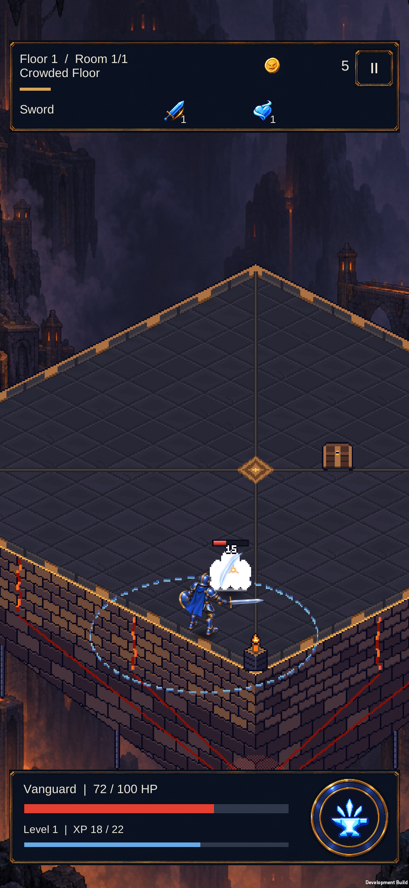
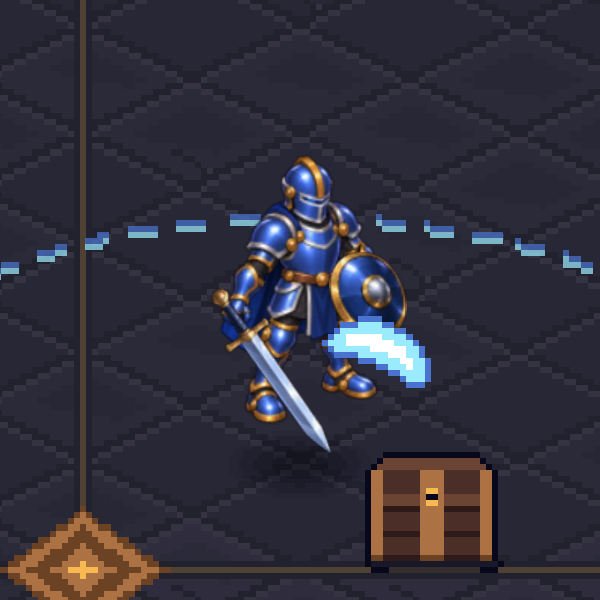
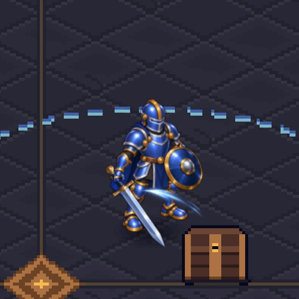
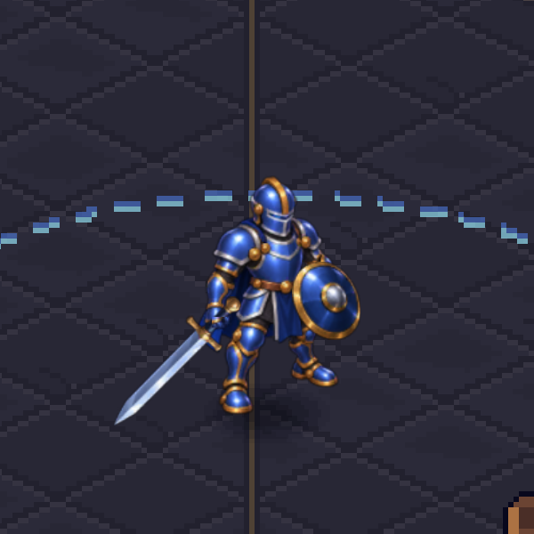
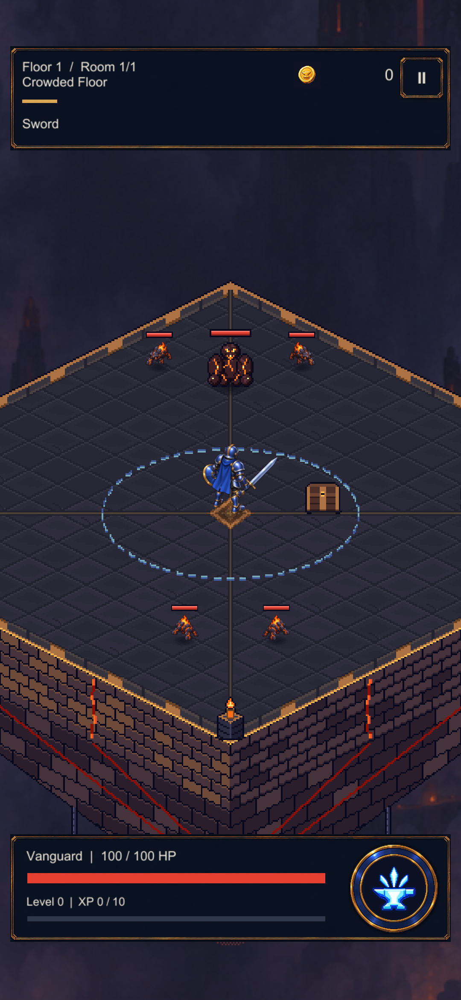

The old attack raised the entire hero by 0.22 world units. Both images use the same detail-camera framing. The new pose keeps its feet down.


Twenty-four consecutive Unity frames at 60 Hz, replayed at half speed. The camera follows the hero; the floor shows real displacement. The shorter 0.8-unit gait cycle reduces the long hold between contacts. Four discrete poses still slide between samples; this is not complete foot locking.

Mite bars use 65% of the previous width and 80% of the height. Grunt bars retain their size. The entry layout below is a staged Unity capture with attacks disabled; some of the ten-actor pack is outside the camera.

Unchanged screenshots from the installed build: compact Mite bars after a southeast drag, then a grounded Sword strike after a southwest drag. The ten-enemy proof ended in victory; Daggers and the normal floor were restored afterwards.

Prototype limitations: four walk poses, mirrored side lighting, large-enemy overlap, and earlier art for large enemies, chest and some equipment. No new character painting was generated in this pass; grip sprites are registered crops of the existing artwork.